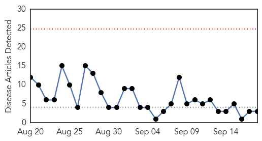
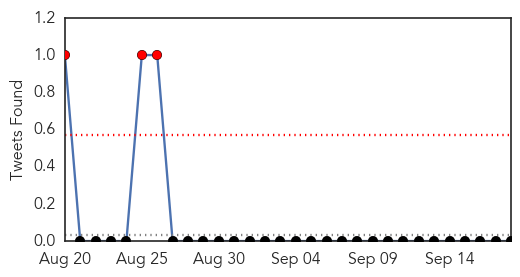
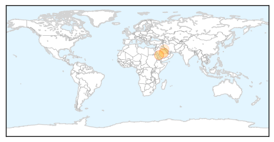

West Nile Virus
30-Day Web Trend
1 alerts, 0 warnings

30-Day Twitter Trend
1 alerts, 0 warnings

Article Locations

Article Confidences

Top Articles:
- 0.990
- Two cases of West Nile Virus confirmed in Oakland County
- 0.988
- Case of West Nile virus confirmed in Algarve
- 0.936
- Local man’s sick horse could have West Nile
- 0.922
- Two deaths in St. Louis area from West Nile virus
- 0.852
- Dr. Deborah Asnis Passes Away At 59 Due To Breast Cancer
- 0.839
- West Nile confirmed in Jackson County
- 0.613
- Health officials investigating dead crows in Millwood
Top Tweets:
-
No tweets found for Sep 18, 2015
MERS
30-Day Web Trend
0 alerts, 0 warnings

30-Day Twitter Trend
1 alerts, 16 warnings

Article Locations
Article Confidences

Top Articles:
Top Tweets:
- 0.680
- AFD Blog `WHO Update On 5 Additional Jordanian MERS Cases' MERS-CoV http://t.co/3RCTx2GuOa
- 0.558
- AFD Blog `Saudi MOH Reports 1 MERS Case In Jeddah' MERS-CoV http://t.co/xZGyMj3Niu